Men's Clothing
Basic Latin/Rhythm
Basic Standard/Smooth
Advanced Latin/Rhythm
Advanced Standard
Advanced Smooth
Accessories
Basic Latin/Rhythm
The Shirt
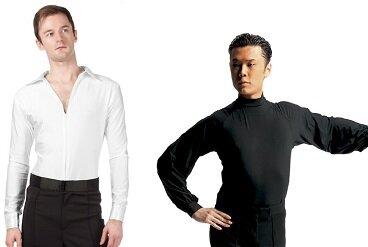A basic Latin/Rhythm shirt is usually a long sleeved black or white shirt without patterning or reflective materials. Shirts are often opened to mid-chest or lower, or turtle necked. These shirts aren't really shirts, but leotards. They strap around between the legs, or have built in shorts, so that the shirt doesn't become untucked while dancing. You can always wear a regular dress shirt, but it is likely to become untucked during dancing, and the shoulders will often look scrunched up, distorting your frame. If you don't want to spend the money, you can wear an Under Armour shirt instead, since Latin shirts are expensive. Most shirts cost around $150, but high end custom made shirts can cost as much as $400.
The Pants
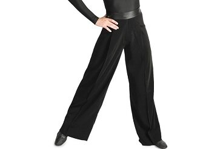Latin/Rhythm pants are solid black pants, sometimes with a satin stripe down the outside of the leg or a satin waistline. They differ from Standard/Smooth pants in that they are tighter at the thighs, but flare out to be wider at the lower legs. They also usually have a sewed in seem down the front to make them look recently ironed. Sometimes they have an elastic band that wraps around the foot so the pants don't slide up and expose the leg during dancing. There is no difference between the pants generally worn by beginners and those worn by advanced dancers. Latin pants start out at around $80 and can cost as much as $400 for a high end custom made pair.
Syllabus Standard/Smooth
Basic Standard/Smooth Shirt
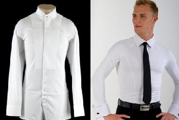Most beginners don't want to spend thousands of dollars on a tail suit, and many prefer a basic Standard shirt. If you aren't wearing tails, you must wear a white dress shirt. It can have any kind of collar and cuffs, but it must be white and long sleeved. In Smooth, the shirt may be any color, but it must be a solid shirt with no patterning and no reflective materials. However, even though no patterning is allowed, tail shirts such as the one seen on the left, are allowed in Standard and Smooth, even though there is a slight patterning to it. The shirt must be tucked in, rolled up sleeves are not allowed, and the shirt must be done up all the way, because a tie of some sort is required. These shirts aren't really shirts, but leotards. They strap around between the legs, or have built in shorts, so that the shirt doesn't become untucked while dancing. You can always wear a regular dress shirt, especially if you are wearing a vest/waistcoat, which will stop the shoulders of a regular dress shirt from scrunching up while in dance frame. Most shirts cost between $80 and $150.
Standard/Smooth Pants
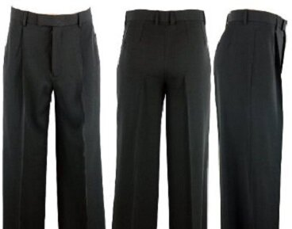Standard/Smooth pants are solid black pants, and usually lack the satin stripe and waistline which Latin/Rhythm pants have, and sometimes have beltloops. They sit as regular dress pants do on the waist, not as high as Latin pants or pants worn with tail suits. They are also more straight legged than Latin/Rhythm pants, but usually still have the sewed in seem to make the pants look recently ironed. These pants can cost between $80 and $400.
Vest/Waistcoat
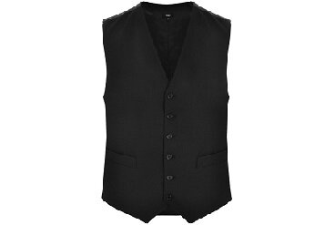Vests (also called waistcoats) are optional, but they are often in Standard and Smooth when dancers lack full tail suits. Vests worn for Standard must be black, but in Smooth it may match the shirt color. You may wear a cardigan or pullover in place of a vest, but it is rarely done these days. A vest can cost between $80 and $200.
Bowtie or Necktie
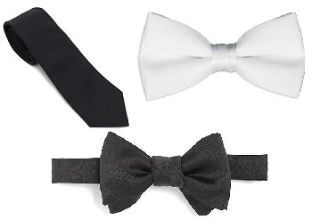In Standard and Smooth, a tie of some kind is required. In Standard, bowties may be black or white, and neckties may be only black. In Smooth, ties and bowties can be any colour, but not multicoloured. There is no difference between a tie/bowtie sold on a dance website and a regular tie/bowtie. Most dancers use bowties that are pretied, and attach via a clip or velcro on the back. This way, the tie doesn't become undone while dancing.
Advanced Latin/Rhythm
The Shirt
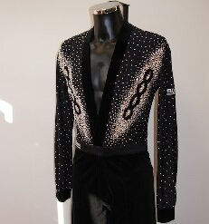When you reach a high enough level, you may want a fancy Latin/Rhythm Shirt. These come in many styles, but there are basically no restrictions. They are generally just like the basic Latin shirts, but come in many colours and may have bright reflective rhinestones on them, or intricate patterning. While there are many styles of shirts, many dancers, even at the highest levels, wear basic Latin/Rhythm shirts, choosing instead to let the Lady shine. An open level Latin/Rhythm Shirt will generally cost the same as a basic Latin/Rhythm shirt of similar quality, but with extra cost for rhinestones. A heavily stoned shirt can cost over $600.
Latin Pants
There is no difference in Latin pants worn at advanced levels from those worn at basic levels. See description above.
Advanced Standard
Tail Suit
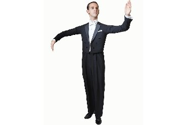In Standard, a tail suit will become necessary at high level competitions. Although, following the movement from American Smooth, regular suits are sometimes allowed, it is customary to wear a tail suit when competing in International style. As you can see from the picture above, it is not a regular tail suit. The sleeves are designed to be straight and without wrinkles when in dance frame, not when standing with arms hanging, as in regular tail suits. The pants sit higher on the waist than even syllabus Standard pants or Latin pants. These pants will reach the bottom ribs. Tail suits area almost always black, but can be dark blue. Wearing a black bowtie or a regular tie is also sometimes permissible, but dancers almost always wear white bowties.
The tail suit consists of a tailcoat, pants, a white waistcoat, a white tail shirt, white suspenders, a white bowtie, and sometimes a separate collar. You will also need cufflinks, shirt/collar studs, and a possibly pocket handkerchief. Custom made tail suits (just the pants and coat) can cost between $1000-2000 USD.
Tail Shirt
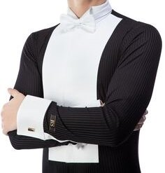A tail shirt is different from a regular standard shirt, in that the cuffs and breast are made of a thick fabric, because those are the only parts of the shirt that will be visible. The rest of the shirt is usually either black, white, grey, or pinstriped, because it is never seen. The front often, but not always, conceals studs/buttons completely. The shirt may or may not have a built-in collar. If it doesn't, a separate collar may be attached.
Waistcoat
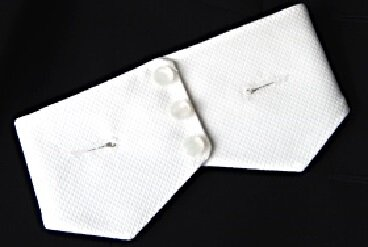It can get hot while dancing. That's why when wearing a full set of tails, dancers don't wear a real vest/waistcoat. Instead, they just wear the bottom front of one on a strap. The rest of it wouldn't be seen under the coat anyway.
Collar
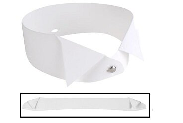Some tail shirts come with a regular attached collar. Others come with a separate collar that has to be attached via studs. Separate collars are a good idea, because they won't wrinkle when packed in luggage, and they won't pick up any make up you may be wearing. They have an extra hole or slit in the back where they are secured to the shirt.
Advanced Smooth
Suit
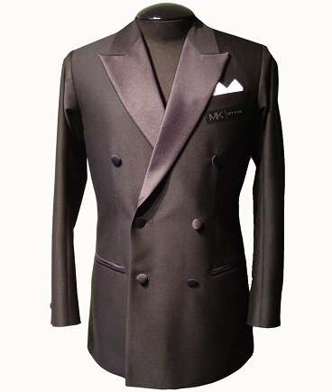 In Open Smooth, dancers wear contemporary suits. These suits differ from the ones in your closet, in that the sleeves are designed to be straight and without wrinkles when in dance frame, not when standing with arms hanging. They are also longer and more slim than regular suits. Although the most common colours are black, dark grey, and dark blue, any colour suit may be worn.
The suit is comprised of a jacket, pants, shirt, long tie, cufflinks, and an optional pocket handkerchief.
Accessories
Cufflinks
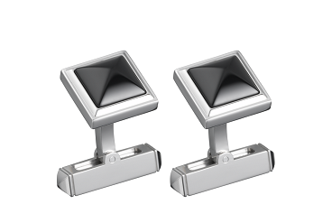Cufflinks hold the cuffs of your shirt together. Some shirts use regular buttons, but fancy shirts require cufflinks.
Shirt Studs
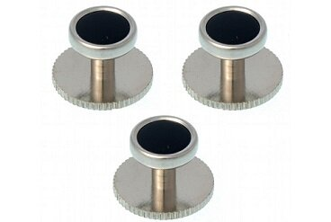Some shirts don't need them, but others do. Shirt studs are like cufflinks for buttoning up your shirt. They're pretty much just fancy buttons.
Front and Back Studs
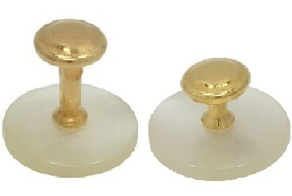These studs are required for tailshirts that have attachable collars (used in the tail suit in Open Standard) They are slightly different from the regular shirt studs. The one in front is longer, to allow it to penetrate the left shirt collar, the right shirt collar, the left side of the attachable collar and the right side of the attachable collar. The back stud is shorter, because it doesn't have to penetrate as much.
Pocket Handkerchief

Not all vests, suits, or tail suits have a pocket for a handkerchief, but if yours does, consider buying one prefolded and sewn together, so that it doesn't become unfolded while dancing.